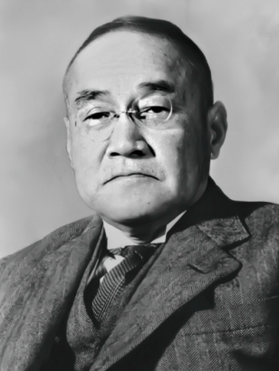
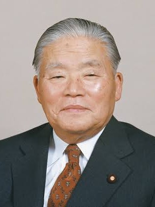
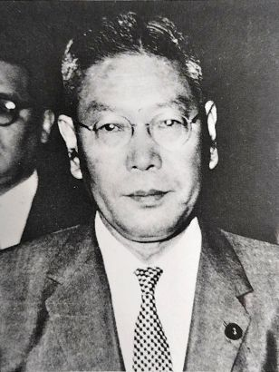

「人間の本当の価値というものは、順風満帆のときに分かるものではない。むしろ、すべての希望を失ったかのような逆境に立たされたときに、どれだけ気骨を持って耐え抜き、再び立ち上がるかで決まる。
苦難のときこそ、その人の真の人間性が試される格言の瞬間なのです。」

「私たちは、つい目に見える華やかな成功や効率ばかりを追い求めがちですが、世の中には報われない努力や、すぐに結果の出ない大切な営みがたくさんあります。
そうした一見無駄に見えるものに心を寄せ、誠実に向き合い続ける姿勢の中にこそ、人間の本当の美徳があるのです。」

「どんなに目の前の難局が大きく、恐ろしいものに見えたとしても、怯む必要はありません。世の中に『山より大きな猪』など出ないのです。
大局を見失わず、私心をなくして薄氷を踏む思いで誠心誠意ぶつかっていけば、人間はどんな逆境をも必ず乗り越えることができるのです。」